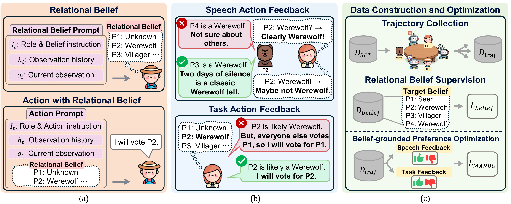

MARBO
Relational Belief Grounding for LLM Agents in Social Deduction Games
1Ulsan National Institute of Science and Technology (UNIST)
Conference / EMNLP 2026
Abstract
Social deduction games (SDGs) require agents to reason under partial observability by maintaining relational beliefs about hidden roles and team alignments. While recent LLM-agent approaches improve gameplay through prompting and preference optimization, they often optimize actions and in-game speech without explicitly grounding them in such beliefs. This frequently leads to strategically inconsistent behavior, especially for compact LLM agents. We introduce Multi-Agent Relational Belief Optimization (MARBO), a belief-grounded preference optimization framework that leverages relational beliefs to guide strategic decisions and in-game speech. MARBO provides preference feedback only when behaviors are supported by reliable relational beliefs and lead to strategically favorable social outcomes, encouraging more consistent learning under uncertainty. Experiments on representative SDGs show that MARBO enables compact LLM agents to consistently outperform existing baselines.

TL;DR. MARBO improves the strategic consistency of compact LLM agents through belief-grounded preference optimization.
Method

Overview of MARBO. (a) Each agent infers relational beliefs over other players’ hidden social labels and conditions action generation on them. (b) MARBO constructs belief-grounded feedback for speech and task actions: speech feedback combines LLM speech with favorable belief shifts, while task feedback combines task with target-belief correctness. (c) presents the overall MARBO training framework
Results

Main results on Werewolf and Among Us, reporting mean win rate (%) ± standard deviation across seeds
BibTeX
@inproceedings{hwang-etal-2026-marbo,
title = {MARBO: Relational Belief Grounding for LLM Agents in Social Deduction Games},
author = {Hwang, Yechan and
Bae, Sangjun and
Kim, Jeongmo and
Bang, Sangwoo and
Han, Seungyul},
booktitle = {Proceedings of the 2026 Conference on Empirical Methods in Natural Language Processing},
year = {2026},
address = {Budapest, Hungary},
publisher = {Association for Computational Linguistics}
}